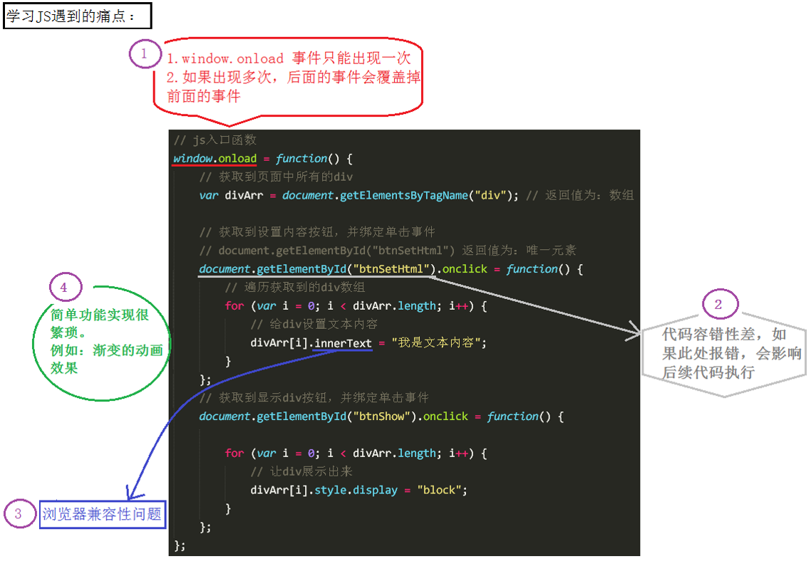
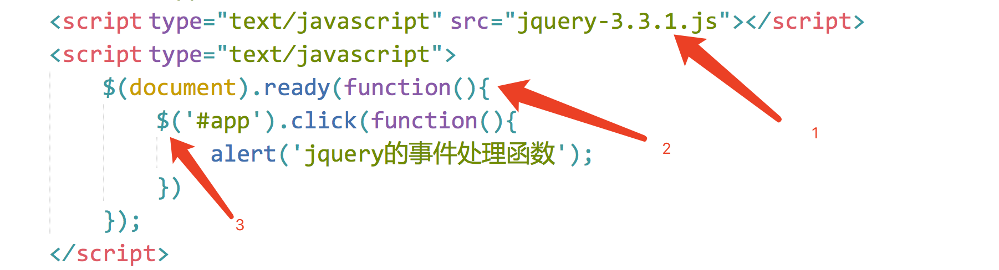
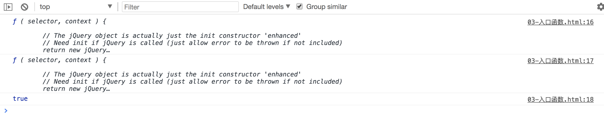
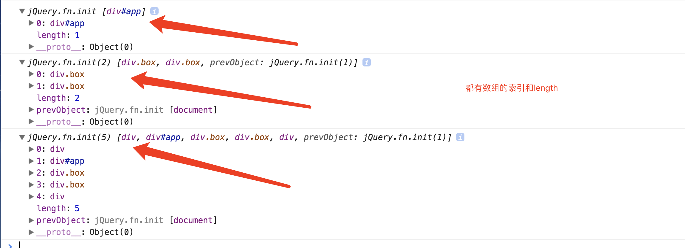
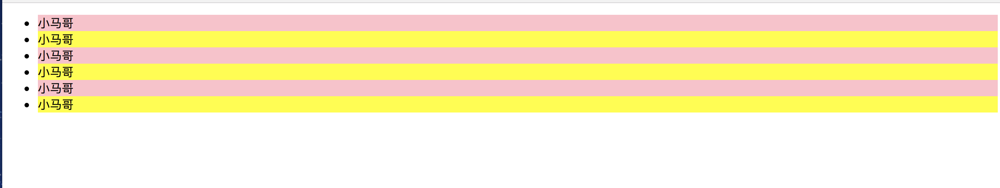

1.为什么要使用jQuery
在用js写代码时，会遇到一些问题：
-
window.onload 事件有事件覆盖的问题，因此只能写一个事件。
-
代码容错性差。
-
浏览器兼容性问题。
-
书写很繁琐，代码量多。
-
代码很乱，各个页面到处都是。
-
动画效果很难实现。

jQuery的出现，可以解决以上问题。
什么是 jQuery
jQuery 是 js 的一个库，封装了我们开发过程中常用的一些功能，方便我们调用，提高开发效率。
js库是把我们常用的功能放到一个单独的文件中，我们用的时候，直接引用到页面里即可。
关于jQuery的相关资料：
-
官网API文档：http://api.jquery.com/
-
汉化API文档：http://www.css88.com/jqapi-1.9/
学习jQuery，主要是学什么
初期，主要学习如何使用jQuery操作DOM，其实就是学习jQuery封装好的那些功API。
这些API的共同特点是：几乎全都是方法。所以，在使用jQuery的API时，都是方法调用，也就是说要加小括号()，小括号里面是相应的参数，参数不同，功能不同。
jQuery的第一个代码
用原生js来实现下面代码效果：

<!DOCTYPE html>
<html lang="en">
<head>
<meta charset="UTF-8">
<title></title>
<style type="text/css">
div{
width: 100px;
height: 100px;
background-color: green;
margin-top: 20px;
display: none;
}
</style>
<script type="text/javascript">
window.onload = function(){
var oBtn = document.getElementsByTagName('button')[0];
var divArr = document.getElementsByTagName('div');
oBtn.onclick = function () {
for (var i = 0; i < divArr.length; i++) {
divArr[i].style.display = "block";
divArr[i].innerHTML = "赵云";
}
}
}
</script>
</head>
<body>
<button>操作</button>
<div></div>
<div></div>
<div></div>
</body>
</html>如果用 jQuery 来写，保持其他的代码不变，<script>部分的代码修改为：（需要提前引入 ）
<!DOCTYPE html>
<html lang="en">
<head>
<meta charset="UTF-8">
<title></title>
<style type="text/css">
div{
width: 100px;
height: 100px;
background-color: green;
margin-top: 20px;
display: none;
}
</style>
</head>
<body>
<button>操作</button>
<div></div>
<div></div>
<div></div>
<script type="text/javascript" src="jquery-3.3.1.js"></script>
<script type="text/javascript">
$(document).ready(function(){
// 获取dom元素
var oBtn = $('button'); //根据标签名获取元素
var oDiv = $('div'); //根据标签名获取元素
oBtn.click(function(){
oDiv.show(1000);//显示盒子
oDiv.html('赵云'); // 设置内容
});//事件是通过方法绑定的
})
</script>
</body>
</html>jQuery 的两大特点
-
链式编程：比如
.show()和.html()可以连写成.show().html()。 -
隐式迭代：隐式 对应的是 显式。隐式迭代的意思是：在方法的内部进行循环遍历，而不用我们自己再进行循环，简化我们的操作，方便我们调用。
jQuery 的使用
使用 jQuery 的基本步骤
（1）引包
（2）入口函数
（3）功能实现代码（事件处理）
如图：

主要：导包的代码一定要放在js代码的最上面。
jQuery 的版本
jQuery 有两个大版本：
-
1.x版本：最新版为 v1.11.3。
-
2.x版本：最新版为 v2.1.4（不再支持IE6、7、8）。
-
3.x版本。
下载jQuery包之后里面会有两个文件，一个是jquery-3.3.1.js，一个是jquery-3.3.1.min.js
它们的区别是：
-
第一个是未压缩版，第二个是压缩版。
-
平时开发过程中，可以使用任意一个版本；但是，项目上线的时候，推荐使用压缩版。
jQuery 的入口函数和 $ 符号
入口函数（重要）
原生 js 的入口函数指的是：window.onload = function() {}; 如下：
//原生 js 的入口函数。页面上所有内容加载完毕，才执行。
//不仅要等文本加载完毕，而且要等图片也要加载完毕，才执行函数。
window.onload = function () {
alert(1);
}而 jQuery的入口函数，有以下几种写法：
写法一：
//1.文档加载完毕，图片不加载的时候，就可以执行这个函数。
$(document).ready(function () {
alert(1);
})写法二：（写法一的简洁版）
//2.文档加载完毕，图片不加载的时候，就可以执行这个函数。
$(function () {
alert(1);
});写法三：
//3.文档加载完毕，图片也加载完毕的时候，在执行这个函数。
$(window).ready(function () {
alert(1);
})jQuery入口函数与js入口函数的区别：
区别一：书写个数不同：
-
Js 的入口函数只能出现一次，出现多次会存在事件覆盖的问题。
-
jQuery 的入口函数，可以出现任意多次，并不存在事件覆盖问题。
区别二：执行时机不同：
-
Js的入口函数是在所有的文件资源加载完成后，才执行。这些文件资源包括：页面文档、外部的js文件、外部的css文件、图片等。
-
jQuery的入口函数，是在文档加载完成后，就执行。文档加载完成指的是：DOM树加载完成后，就可以操作DOM了，不用等到所有的外部资源都加载完成。
文档加载的顺序：从上往下，边解析边执行。
jQuery的$符号
jQuery 使用 $ 符号原因：书写简洁、相对于其他字符与众不同、容易被记住。
jQuery占用了我们两个变量：$ 和 jQuery。当我们在代码中打印它们俩的时候：
<script src="jquery-3.3.1.js"></script>
<script>
console.log($);
console.log(jQuery);
console.log($===jQuery);
</script>打印结果：

从打印结果可以看出，$ 代表的就是 jQuery。
那怎么理解jQuery里面的 $ 符号呢？
$ 实际上表示的是一个函数名 如下：
$(); // 调用上面我们自定义的函数$
$(document）.ready(function(){}); // 调用入口函数
$(function(){}); // 调用入口函数
$(“#btnShow”) // 获取id属性为btnShow的元素
$(“div”) // 获取所有的div标签元素如上方所示，jQuery 里面的 $ 函数，根据传入参数的不同，进行不同的调用，实现不同的功能。返回的是jQuery对象。
jQuery这个js库，除了$ 之外，还提供了另外一个函数：jQuery。jQuery函数跟 $ 函数的关系：jQuery === $。
js中的DOM对象 和 jQuery对象 比较（重点，难点）
二者的区别
通过 jQuery 获取的元素是一个数组，数组中包含着原生JS中的DOM对象。举例：
针对下面这样一个div结构：
<div></div>
<div id="app"></div>
<div class="box"></div>
<div class="box"></div>
<div></div
通过原生 js 获取这些元素节点的方式是：
var myBox = document.getElementById("app"); //通过 id 获取单个元素
var boxArr = document.getElementsByClassName("box"); //通过 class 获取的是伪数组
var divArr = document.getElementsByTagName("div"); //通过标签获取的是伪数组通过 jQuery 获取这些元素节点的方式是：（获取的都是数组）
//获取的是数组，里面包含着原生 JS 中的DOM对象。 console.log($('#app'));
console.log($('.box'));
console.log($('div'));

设置当前4个div的样式：
$('div').css({
'width': '200px',
'height': '200px',
"background-color":'red',
'margin-top':'20px'
})由于JQuery 自带了 css()方法，我们还可以直接在代码中给 div 设置 css 属性。
总结：jQuery 就是把 DOM 对象重新包装了一下，让其具有了 jQuery 方法。
二者的相互转换
1、 DOM 对象 转为 jQuery对象：
$(js对象);2、jQuery对象 转为 DOM 对象：
jquery对象[index]; //方式1（推荐）
jquery对象.get(index); //方式2jQuery对象转换成了 DOM 对象之后，可以直接调用 DOM 提供的一些功能。如：
$('div')[1].style.backgroundColor = 'yellow';
$('div')[3].style.backgroundColor = 'green';总结：如果想要用哪种方式设置属性或方法，必须转换成该类型。
举例：
隔行换色
代码如下：
<!DOCTYPE html>
<html>
<head lang="en">
<meta charset="UTF-8">
<title></title>
<script src="jquery-3.3.1.js"></script>
<script>
//入口函数
jQuery(function () {
var jqLi = $("li");
for (var i = 0; i < jqLi.length; i++) {
if (i % 2 === 0) {
//jquery对象，转换成了js对象
jqLi[i].style.backgroundColor = "pink";
} else {
jqLi[i].style.backgroundColor = "yellow";
}
}
});
</script>
</head>
<body>
<ul>
<li>小马哥</li>
<li>小马哥</li>
<li>小马哥</li>
<li>小马哥</li>
<li>小马哥</li>
<li>小马哥</li>
</ul>
</body>
</html>效果如下：
